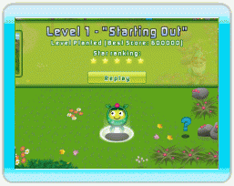

9 |
Star Power |
 |
|

Lo Star Power di Follie misura la sua fiducia in se stessa.. Follie è così turbata dall'aspetto del mondo che la circonda da essere arrabbiata e scoraggiata.
Quando un livello è completato, i Flowerworks sbocciati hanno un effetto permanente sull'ambiente, dando un tocco magico. Ogni volta che succede, la fiducia di Follie in se stessa aumenta sentendosi più sicura di poter completare la sua avventura. Ogni livello completato premia Follie con un voto in stelle. Ottieni più punti per ottenere un voto in stelle più alto. Il valore massimo, per ogni livello, è di 5 stelle. Ogni nuova stella guadagnata viene sommata allo Star Power di Follie. Questo è visibile nello schermo in alto quando si esplora il mondo. Quando Follie ottiene nuove abilità, sarai in grado di ottenere punteggi più alti e migliori voti in stelle. Gioca di nuovo un livello, quante volte vuoi, provando finché non otterrai 5 stelle! |
 |
 |
 |